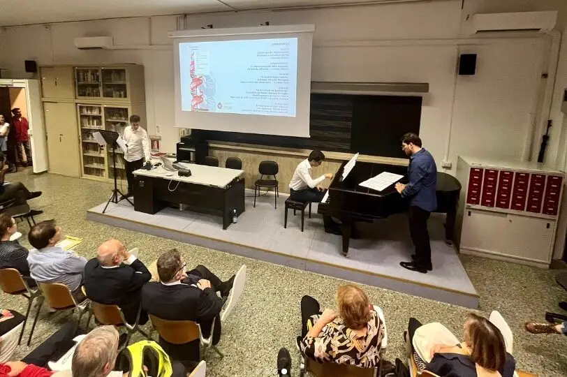
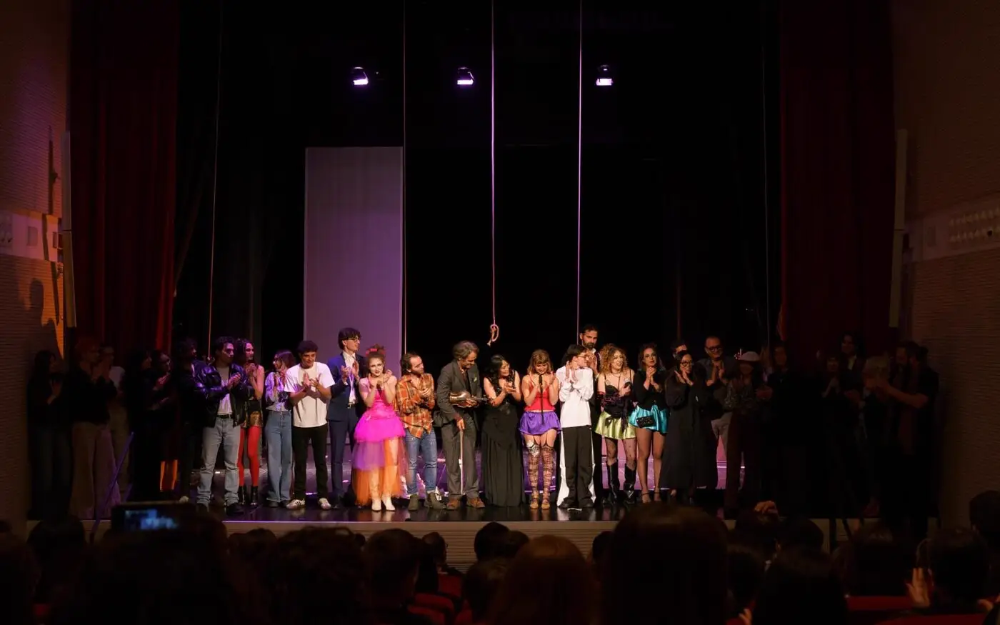
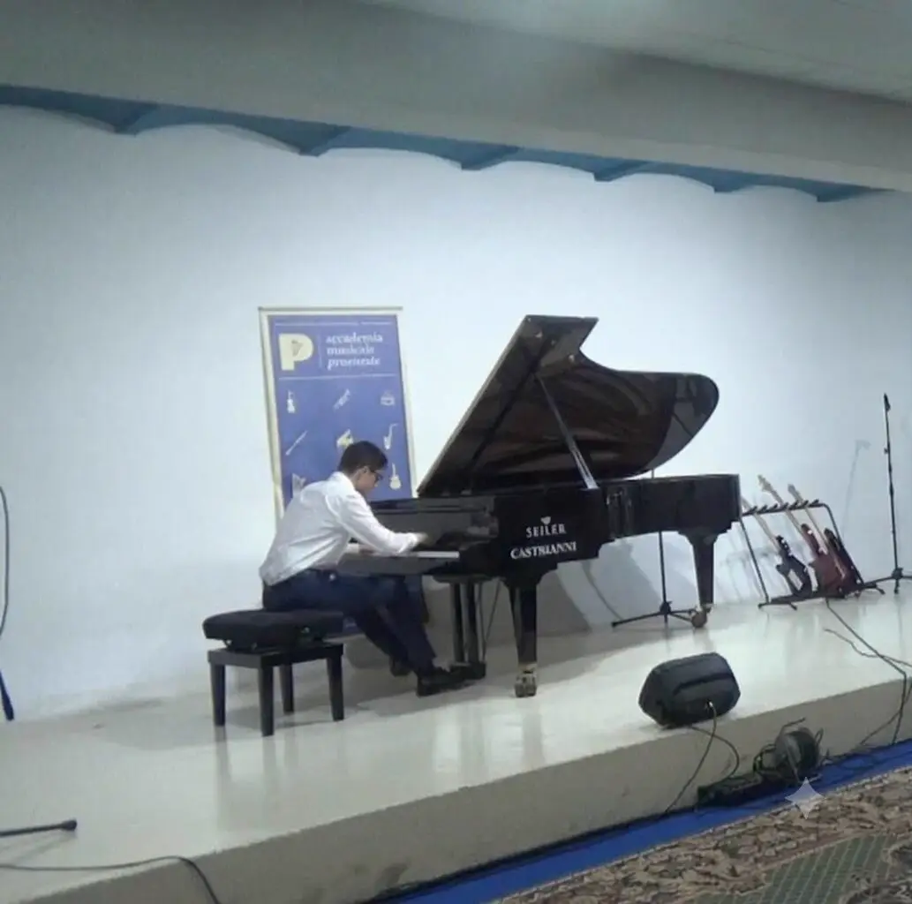
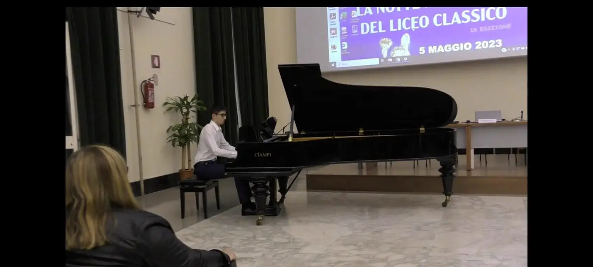
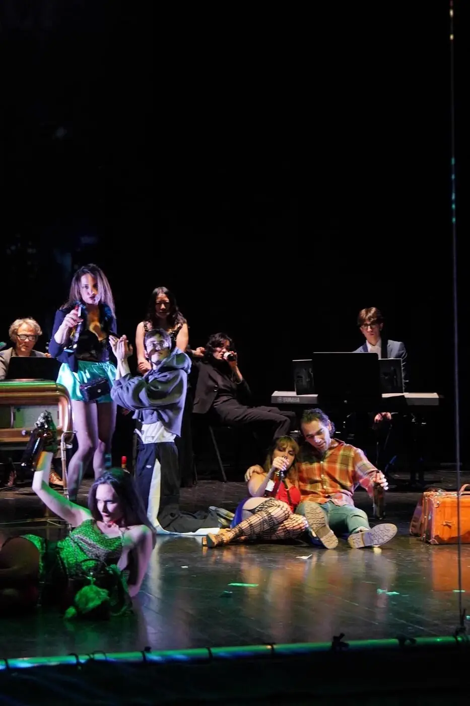
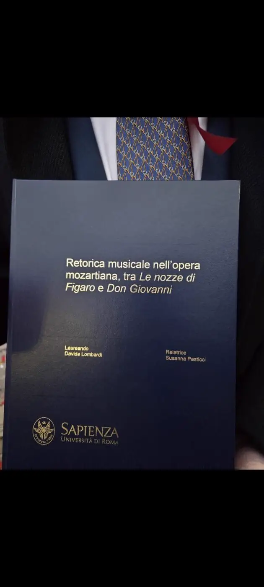
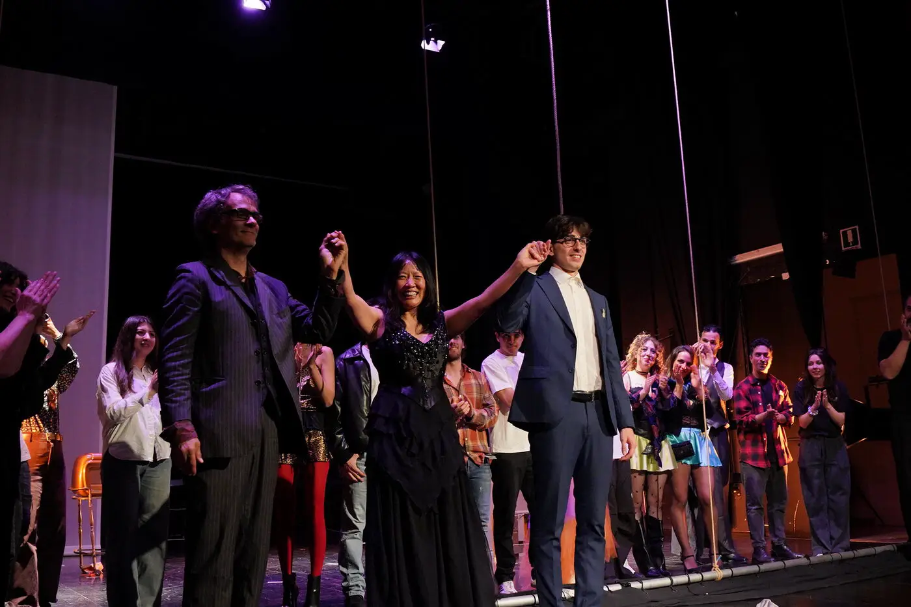
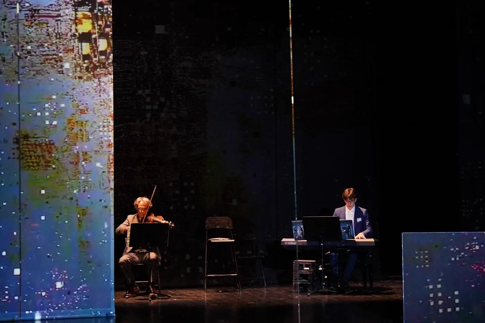
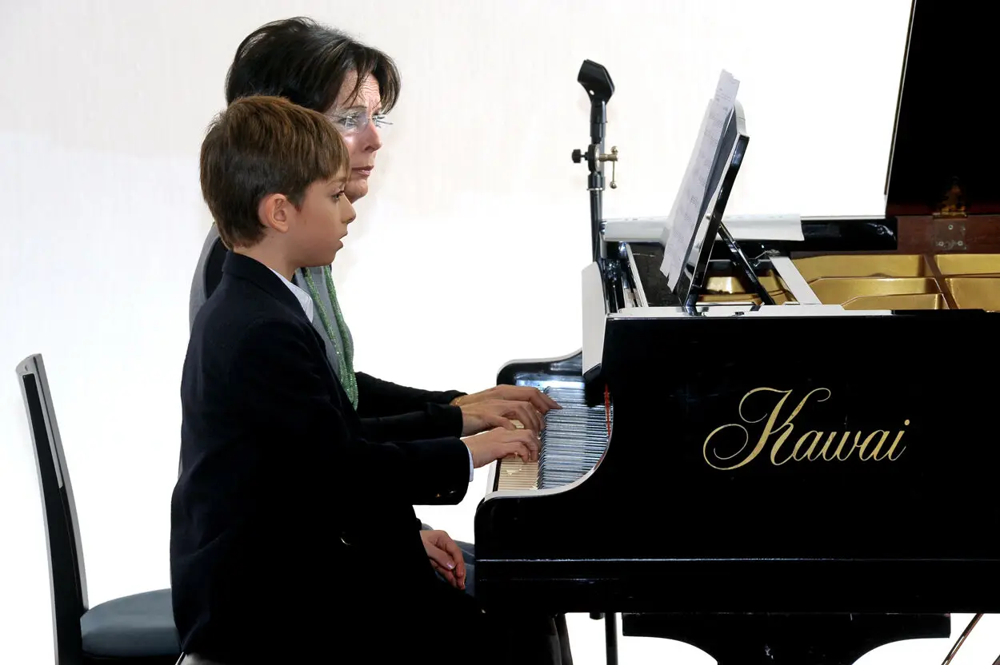

Ascolta
Čajkovskij — Concerto n. 1
Un estratto dalle performance in repertorio, in cui la profondità del suono si fonde con il rigore analitico e la prassi esecutiva.
Esplora il canale YouTube →“Pianista ed esecutore con solida formazione accademica, didattica e multidisciplinare.”
Attualmente iscritto al Biennio Specialistico del Conservatorio "Santa Cecilia" di Roma, Davide affianca alla prassi esecutiva e all'esperienza concertistica una profonda preparazione storico-teorica e analitica.
La sua identità musicale è maturata anche attraverso la Laurea in Letteratura, Musica e Spettacolo alla Sapienza, culminata in una tesi sulla retorica musicale nell'opera mozartiana (tra Le nozze di Figaro e Don Giovanni), definendo un approccio che unisce istinto interpretativo e indagine intellettuale.
Live / Esperienze Selezionate

La memoria delle cose
Performer pianistico in ensemble in un'esibizione tenuta in memoria del Prof. Antonio Rostagno. Un momento di profondo raccoglimento musicale e istituzionale.

Mahagonny Suite
Pianista nell'allestimento e nella produzione dello spettacolo teatrale-musicale, collaborando in ensemble con gli altri esecutori in scena per una performance multidisciplinare.

Recital Pubblici
Esibizioni pianistiche in pubblico nell'ambito della programmazione dell'Accademia, esplorando repertori solistici e affrontando la prassi del recital dal vivo.

Notte Nazionale dei Licei Classici
Partecipazione come esecutore pianistico a due edizioni della rassegna, unendo la dimensione musicale alla valorizzazione della cultura umanistica e classica.




Formazione
Biennio Specialistico di II Livello in Pianoforte
Conservatorio di Musica "Santa Cecilia" — Roma
Letteratura, Musica e Spettacolo
Sapienza Università di Roma
Tesi: "Retorica musicale nell'opera mozartiana, tra Le nozze di Figaro e Don Giovanni".
Licenza di Teoria, Solfeggio e Dettato Musicale
Conservatorio di Musica "Alfredo Casella" — L'Aquila
Conseguita con il massimo dei voti.
Studi Pianistici e Formazione Musicale
Accademia Musicale Praeneste — Roma
Approfondimenti
e Masterclass
Improcomp (2024)
Corsi di Perfezionamento e Approfondimento Teorico di Alto Livello, con focus su teoria avanzata, composizione e improvvisazione.
M° Piero Rattalino
Masterclass e corsi teorici presso l'Accademia Musicale Praeneste, approfondendo la storia dell'interpretazione pianistica, l'analisi e la critica musicale.
Competenze e Discipline
PERFORMANCE
DIDATTICA
RICERCA

Gli Inizi
Un percorso musicale iniziato fin da giovanissimo presso l'Accademia Musicale Praeneste di Roma. I primi studi pianistici hanno segnato l'avvio di una ricerca continua sul suono e sul repertorio, evolvendosi nel tempo attraverso la pratica concertistica corale e d'insieme sotto la guida di docenti come il M° Claudio Perugini e il M° Alberto De Sanctis.